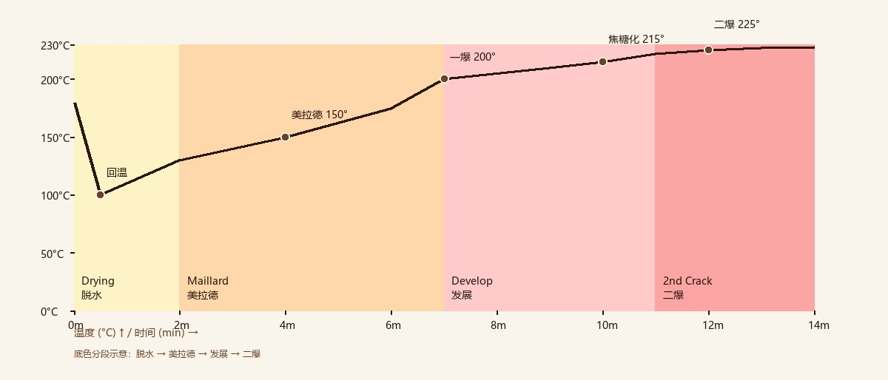
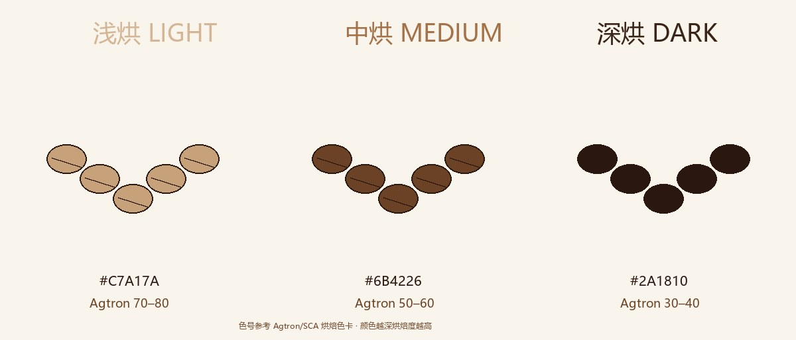
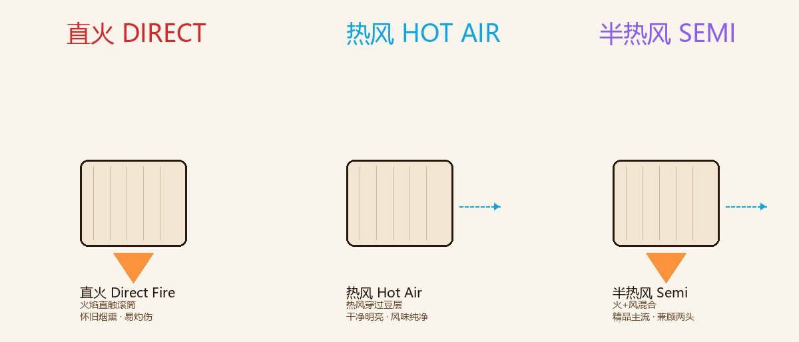

生豆本身几乎没有"咖啡味"——只有淡淡的青草气。真正的香气，是烘焙时一连串化学反应点燃的。 这一章我们讲清楚：美拉德反应、焦糖化、一爆二爆，以及烘焙度是怎么决定你杯中那口味道的。
生豆（Green Bean）其实闻起来一点都不"咖啡"——更像青草、谷物，甚至有点像晒干的豆子。你熟悉的咖啡香，要到烘焙（Roasting）里才被"创造"出来。
烘焙的本质是把热量的变化，翻译成化学变化：当豆温爬过 150°C，糖和氨基酸开始"跳舞"；爬过 200°C，豆体第一次发出爆裂声。短短 8–15 分钟里，一颗米黄色的生豆会变成深棕色的熟豆，重量掉掉 12–18%，香气却从零涨到 800 余种。
业内常说：生豆决定了风味的上限，烘焙决定了你能拿到多少。同一支 95 分的瑰夏，烘砸了也一样寡淡发苦——这就是为什么烘焙师更像"风味的翻译官"，而不是流水线操作员。
烘焙知识看着复杂，其实围绕三条主线展开：化学反应（味道从哪来）、烘焙度（味道到哪去）、设备与曲线（怎么控制）。本章按这个顺序推进。
美拉德反应、焦糖化、斯特雷克降解——咖啡香气的三大"车间"，决定味道从哪来。
浅烘、中烘、深烘不只是颜色深浅，而是三套完全不同的风味取向与冲煮适配。
直火、热风、半热风三大流派，加上烘焙曲线与 RoR——烘焙师手里的"方向盘"。
把一锅中烘放慢看，其实是六幕连续剧。装豆后约 1 分钟，豆温触底回升——这个低点叫回温点（Turnaround），是整条烘焙曲线的起跑线。随后进入脱水期：豆内约 10–12% 的水分被蒸发，豆色由青绿转淡黄，闻起来还是"草味"。
真正的转折在 150°C 之后：美拉德反应启动，香气从"草"转向"烤面包"；当豆温抵达 196–205°C，豆内积蓄的水汽与 CO₂ 冲破细胞壁，发出标志性的"一爆"。一爆之后到出炉，称为发展期——甜感与干净度在这里定型；若继续推向 224–230°C，则进入二爆的深烘领域。出炉后必须立刻风冷，否则余温会让反应继续"过火"。
美拉德反应（Maillard Reaction），名字来自 1912 年首次描述它的法国化学家美拉德。它的配方简单到只有两样东西：氨基酸和还原糖——恰好咖啡豆里都有。当豆温升到约 140–165°C，这两类分子开始连锁结合，生成成百上千种新的香气与色素分子。
这一反应最标志性的产物是类黑精（Melanoidins）：它既给熟豆上"棕色"，也承载大量风味物质，还是咖啡醇厚度（body）的重要来源。你熟悉的烤面包、坚果、麦芽、焦糖饼干这些"棕色系"香气，主力都来自美拉德反应。
值得一提的是美拉德的一条"支线"——斯特雷克降解（Strecker Degradation）：氨基酸在反应中进一步分解，生成各类醛类分子，为烘焙香气添上麦芽、谷物、杏仁这些"细碎的层次"。主线负责上色给底味，支线负责点缀——两层合起来，撑起了烘焙香气的大半边天。

豆温约 140–165°C 起明显进行，一直延续到出炉。脱水期一结束，它就是锅里的"主旋律"。
美拉德 = 氨基酸 + 糖；焦糖化 = 糖单独受热。参与者不同，风味气质也截然不同——这就是两者分工的根源。
豆温爬过约 170°C 后，另一条独立的反应线开始发力：焦糖化（Caramelization）。糖（以蔗糖为主）在高温下脱水、聚合、重组，生成焦糖色素与一系列甜香分子——太妃糖、焦糖、蜂蜜的气息，就是这一步给的。
焦糖化和美拉德是接力关系，不是二选一：脱水期结束时美拉德先"开路"，豆温继续攀升后焦糖化"接棒"。两条线在发展期里同时推进、互相交织——美拉德给底味和醇厚，焦糖化给甜感和光泽。
但甜感有窗口期：烘得越深，糖被消耗得越多。浅烘时糖分保留多、酸感明亮；深烘时糖几乎烧尽，只剩苦、烟熏与炭化气息。所谓"把甜烘进豆子里"，本质是让焦糖化停在恰到好处的位置。
中烘豆的"甜"主要来自这里——这也是中烘能成为精品主流的化学原因。
焦糖化越界就走向炭化。深烘的"苦"不是失误，是化学反应走到尽头的自然结果。
烘焙师盯温度、盯颜色，但真正指挥出炉时机的，是耳朵。咖啡豆在受热过程中会经历两次标志性的"爆裂"，它们是锅内的两个物理事件，也是烘焙度的两道分水岭。
一爆（First Crack）发生在约 196–205°C：豆内积蓄的水汽和 CO₂ 冲破细胞壁，发出类似爆米花的清脆声响。一爆之后，豆体第一次"透气"，风味发展进入快车道——浅烘到中烘的一切出品，基本都落在一爆之后的窗口里。
二爆（Second Crack）发生在约 224–230°C：细胞壁的纤维结构开始断裂，豆内油脂被推到表面，豆色转为深棕近黑，烟熏感和苦感陡然上升——这是深烘与意式烘焙的领地。多数精品咖啡在一爆到二爆之间收尾，二爆之后继续烘，产区风味会迅速被"烘焙味"覆盖。
烘焙度最直观的衡量工具是 Agtron 色值：用红外仪器测量豆面反射率，数值越大越浅、越小越深。日常选购不必背数字，记住三条规律就够：越浅越酸、越深越苦；浅烘讲产地，深烘讲烘焙；中烘找平衡。
老派烘焙业还有一套以城市命名的行话：City Roast（城市烘，中偏浅）、Full City（全城市烘，中偏深）、French Roast（法式，深）、Italian Roast（意式，极深）。看到这些词，你就知道这袋豆站在光谱的哪一端。

Agtron 约 65–80。花果香、柑橘酸质、茶感突出，最接近产地的"风土本色"。
适合：手冲、虹吸
代表：埃塞俄比亚、肯尼亚、云南精品
Agtron 约 45–60。焦糖、坚果、均衡圆润，酸苦两端的中间点。
适合：手冲、法压、入门全能
代表：哥伦比亚、危地马拉、巴西
Agtron 约 25–40。黑巧克力、烟熏、焦糖苦韵，body 厚重。
适合：意式浓缩、摩卡壶、加奶
代表：曼特宁、意式拼配、传统深烘
三种烘焙度的核心差异速查
| 烘焙度 | Agtron | 豆色 | 酸度 | 苦度 | 醇厚度 | 典型风味 | 适合冲煮 · 代表产地 |
|---|---|---|---|---|---|---|---|
| 🟡 浅烘 | 65–80 | 浅肉桂色 | ⭐⭐⭐⭐⭐ | ⭐ | ⭐⭐ | 花果、柑橘、茶感 | 手冲 · 埃塞 / 肯尼亚 / 云南 |
| 🟠 中烘 | 45–60 | 焦糖棕 | ⭐⭐⭐ | ⭐⭐ | ⭐⭐⭐ | 焦糖、坚果、平衡 | 手冲 / 法压 · 哥伦比亚 / 巴西 |
| 🟤 深烘 | 25–40 | 深棕近黑 | ⭐ | ⭐⭐⭐⭐⭐ | ⭐⭐⭐⭐⭐ | 黑巧、烟熏、焦糖苦韵 | 意式 / 摩卡壶 · 曼特宁 / 意式拼配 |
同样的豆、同样的曲线，换一台烘焙机，出来的味道可能判若两豆。按热量传递方式，烘焙机基本分成三个流派——它们的差异，本质上就是"豆子靠什么受热"。

明火直接烧滚筒外壁，豆子靠金属传导受热。风味带着标志性的烟火气与厚重感，是老派深烘的浪漫。代价是火力控制难、豆子易灼伤，均匀度依赖烘焙师手感。
热风从底部吹入，豆粒像在热气流里"沸腾"，几乎不接触金属。受热极其均匀，风味干净明亮、酸质通透。缺点是醇厚度偏轻、火力惯性小，适合突出细腻风味的浅烘。
滚筒传导为主、循环热风为辅，兼顾 body 与干净度。当代精品烘焙机的绝对主流——Probat、Diedrich 等经典品牌都属于这一系。如果你喝的精品豆多半出自它。
烘焙师口中的"烘焙曲线（Roast Profile）"，是豆温随时间变化的轨迹。它就像一份菜谱：同一支豆子想复刻上周的味道，靠的就是对着曲线逐分钟校准火力。
曲线健康与否，看两个指标。一是 RoR（Rate of Rise，升温速率）：豆温每分钟爬升的幅度，理想状态是平滑递减——RoR 骤降意味着烘焙"卡住"（风味发展停滞），骤升则说明火力过猛。二是 DTR（发展时间比率）：一爆到出炉的时间占全程的比例，通常落在 18–25%。太短甜感没长开，太长则向苦与烟熏漂移。
咖啡豆真正的"新鲜窗口"以烘焙日计算，不是保质期。货架上的"12 个月保质期"和风味无关——找包装上那行 Roasted on / 烘焙日期。
刚出炉的豆子持续排出 CO₂，风味尚未稳定。养豆（Resting）一般 3–30 天：手冲浅中烘建议养 5–14 天，意式深烘可养到 10–30 天。太新鲜的豆子冲煮时排气汹涌，萃取反而不稳。
不少烘焙商提供同产地不同烘焙度的组合。这是理解本章最短的路：同一路生豆，浅烘喝产地、深烘喝烘焙，一对比，"烘焙决定什么"就不言自明。
中烘。它处在酸苦两端的中间点，容错率高、配什么冲法都不难喝；等喝出偏好，再向浅（追果酸）或深（追醇厚）两端探索。
💬 评论区
在 GitHub Discussions 留言讨论 · 无需登录，登录 GitHub 账号即可评论 · 查看历史讨论